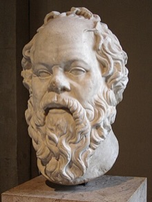

470-399 BC · Athens
← The philosophy map · About Socrates
Is the wisest person the one who knows the most, or the one who knows what they don't know?
Two doctors look at your X-ray. The first says at once, "It's nothing, go home." The second says, "I'm not sure yet. Let me ask you some questions." Which doctor do you trust more? Two and a half thousand years ago, a man in Athens built a whole philosophy on that second doctor.
Read one part at a time. After each part, close your eyes and answer the question before you check.
Socrates lived in Athens from 470 to 399 BC. He was poor, often barefoot, and famously ugly. He fought bravely as a soldier, but he never wrote a single book. Everything we know about him comes from his students, especially Plato. Every day he walked through the market and talked to anyone: politicians, poets, craftsmen, young people.
Why do we know Socrates mainly through Plato?
A friend asked the Oracle at Delphi, the most sacred voice in Greece, if anyone was wiser than Socrates. The answer: no one. Socrates was confused, because he felt he knew nothing. So he questioned people who were famous for being wise. Again and again he found that they believed they knew things they did not really know. He decided he was wiser only in one way: he knew that he knew nothing.
What did Socrates discover when he questioned 'wise' people?
Socrates called himself a gadfly, a small biting fly that keeps a big lazy horse awake. His questions made powerful people look foolish, and they did not forgive him. In 399 BC he was put on trial for 'corrupting the young' and not respecting the city's gods. He refused to stop asking questions, and he was sentenced to death by drinking poison.
Why did Socrates call himself a gadfly?
Each word is hidden in a sentence. Read it aloud and say what you think the bold word means. Then reveal and compare.
Which questions dig deeper, like Socrates, and which just close the conversation? Decide together, then reveal.
Now you: explain the Socratic method to a friend who has never heard of it. Speak for about a minute. Use the starters if they help.
You have a worrying pain. Doctor A is famous and answers in ten seconds, completely sure. Doctor B is less famous, asks you many questions and says, "I'm not certain yet; I want to test two possibilities."
Tap two cards. Use the timer to keep going, and use at least two of the phrases above.
No looking back. Answer from memory first, then check.
What did Democritus say everything is made of?
What did Heraclitus mean by 'You cannot step into the same river twice'?
From memory, out loud. Then check.
1. Why did the oracle call Socrates the wisest man in Athens?
2. What are the four steps of the Socratic method?
3. Why was Socrates put to death?
4. What does 'assumption' mean? Give an example.